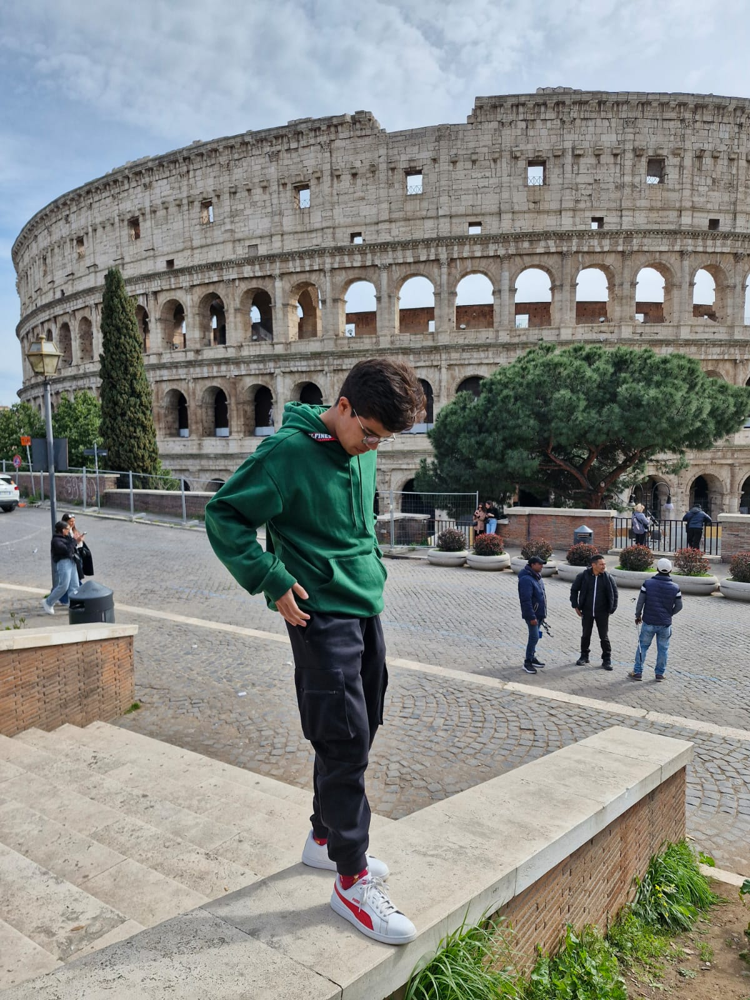

Proyecto Web Intersemestral
En este sitio web se podrá acceder a las actividades realizadas durante el periodo intersemestral de la E.E. Proyecto Web.
Universidad Veracruzana
Facultad de Ciencias Administrativas y Sociales

ABOUT ME
Me llamo Carlos y tengo 20 años. Nací y sigo viviendo en la ciudad de Xalapa, Veracruz. Actualmente estoy estudiando la licenciatura en Administración de Negocios Internacionales en la Universidad Veracruzana. Además, soy líder de sección de teclados en una de las bandas de marcha más importantes de México.

...